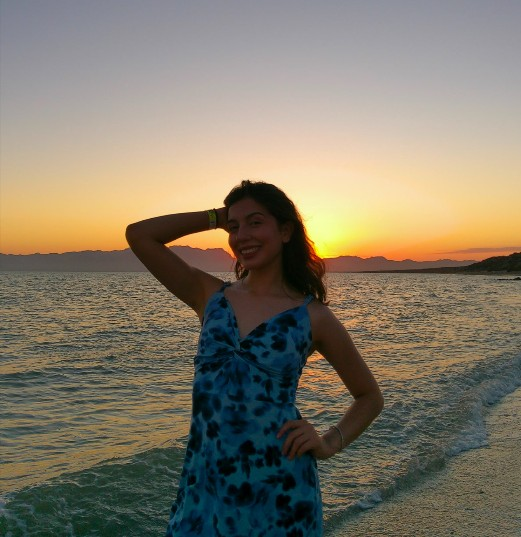
"Success is built through perseverance, faith, and the courage to keep moving forward."
I am a determined and ambitious student who values personal growth, discipline, and service. I constantly strive to become the best version of myself while helping others around me. My greatest motivation comes from my family, my faith, and my dream of becoming a physician who positively impacts the lives of many people.
Explore My StoryEvery chapter of my life has shaped who I am today. Through experiences, challenges, achievements, and valuable lessons, I have learned that perseverance and faith can transform difficulties into opportunities. This website presents my journey from childhood to my future aspirations.
I was born on November 6, 2008, in Ensenada, Baja California. During my early childhood, my father was finishing medical school, while my mother devoted her time and energy to raising me.
One of my earliest memories involved an accident that left me with a small scar between my eyebrows. While I was running with a spoon in my hand, I tripped and injured myself. Although it was painful, it became a memorable story that my family still tells today.
I grew up moving from one city to another. First, my family lived in Ensenada, then in San Vicente, later in Hermosillo, and finally in Cananea when I was five years old. While I was adapting to new environments, I was constantly learning how to make friends and embrace change.
Three years after moving to Cananea, my younger brother was born. By that time, I already had a younger sister, and our family became complete. I attended several schools during childhood, but when I entered third grade, I remained at the same institution until I graduated from middle school.
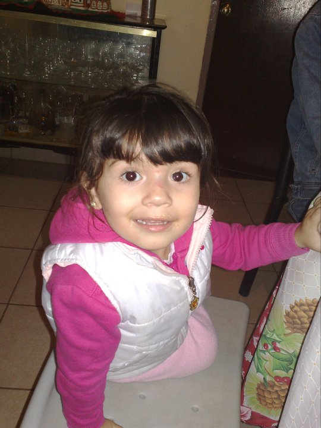
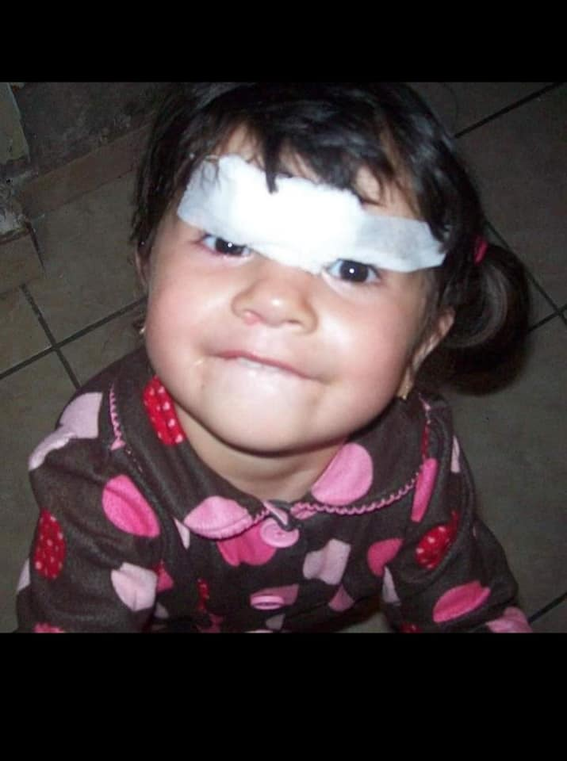
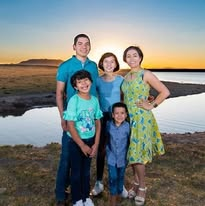
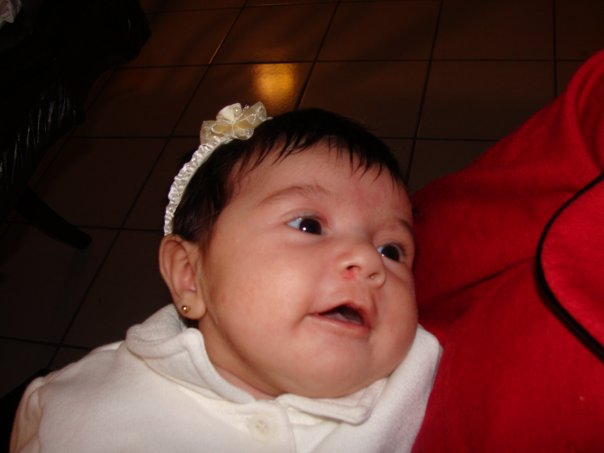
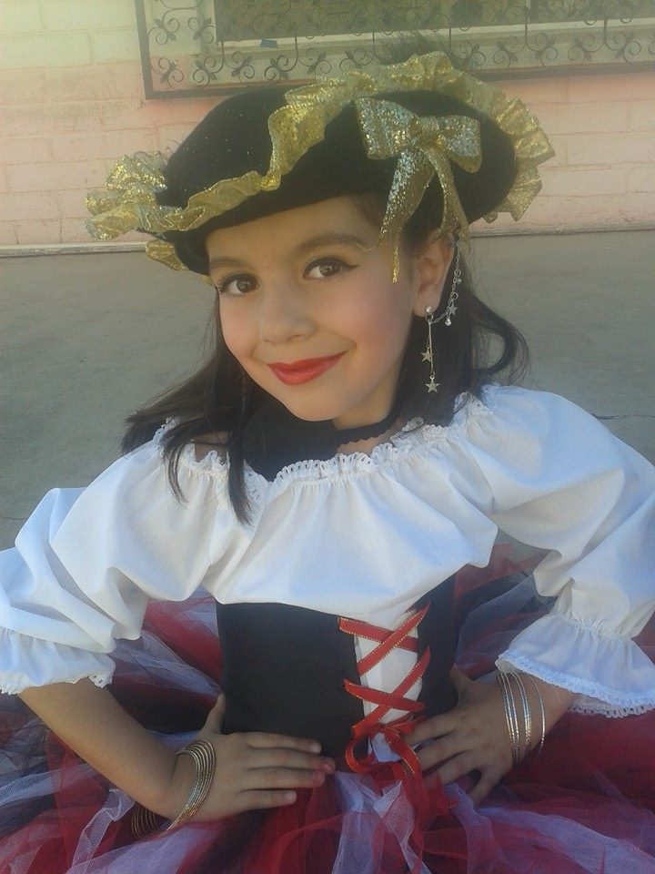
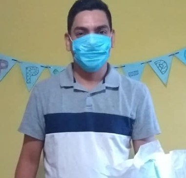
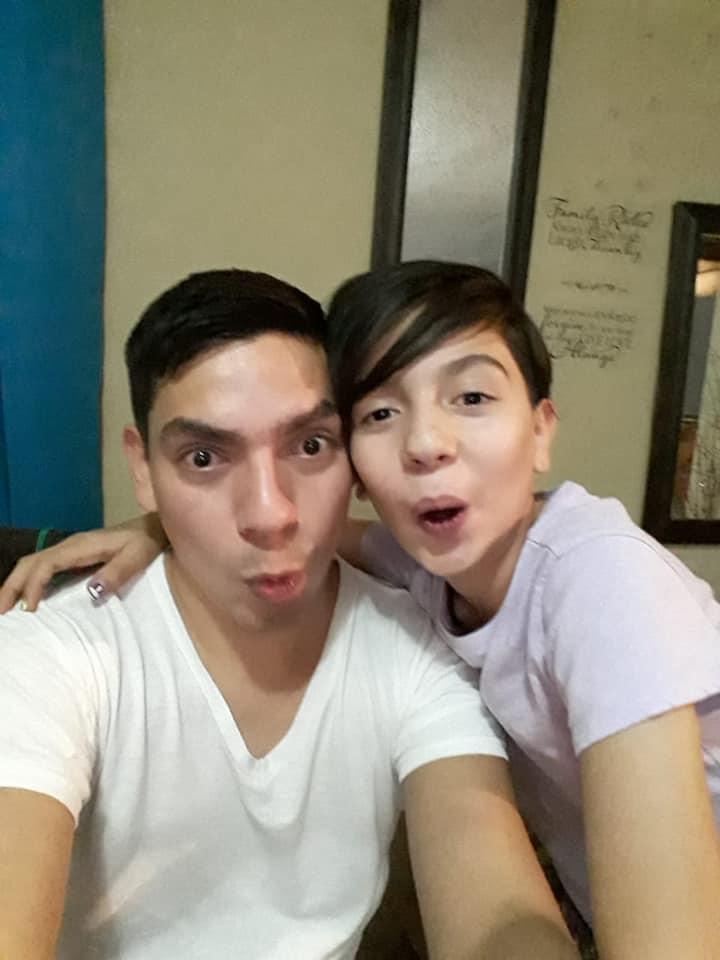
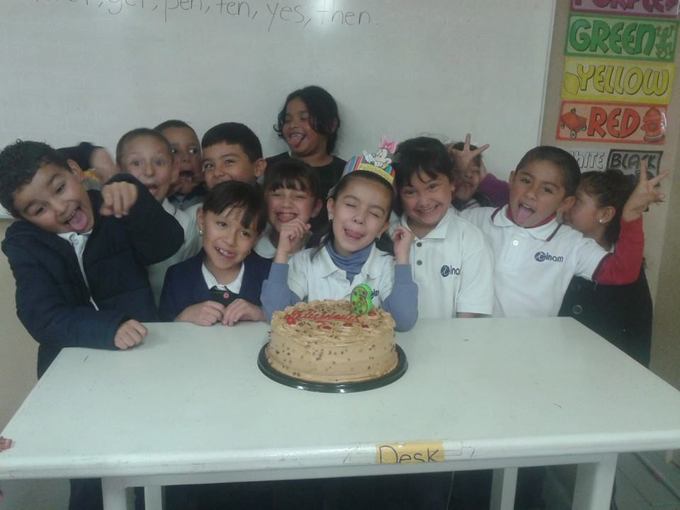
Throughout my life, I have encountered several obstacles that have shaped my character. One of the most difficult moments occurred when my father suffered a collapsed lung and was close to losing his life.
Before that experience, I had never faced such a frightening situation. It completely changed my perspective and taught me to appreciate every moment spent with loved ones.
Another challenge involved my social life. At times, I felt rejected or unable to fit in. However, those experiences helped me identify who truly cared about me and who deserved a place in my life.
My first year of high school was also a significant challenge. It introduced me to a completely different environment where I experienced personal growth and discovered new perspectives.
If I had given up during those difficult periods, I would not have developed the resilience, maturity, and self-confidence that define me today.
Throughout my life, I have achieved several goals that reflect my dedication and perseverance.
One of my earliest accomplishments occurred when I won my first singing competition at the age of eight. As a result of my effort, I received a tablet as a prize.
Later, I successfully earned places in eighth and ninth grade at Instituto Minerva. I achieved this goal through discipline, consistency, and hard work.
At the age of fifteen, I won the Prefeco Schools Singing Contest, competing against students from different states such as Tamaulipas, Hidalgo, and Chihuahua.
Most recently, I was accepted into my desired program at the University of Sonora. This achievement represents years of dedication, and I have been working toward this goal for a long time.
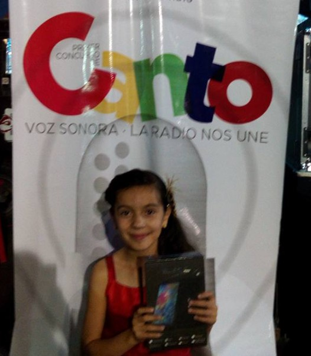
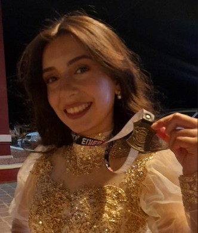
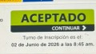
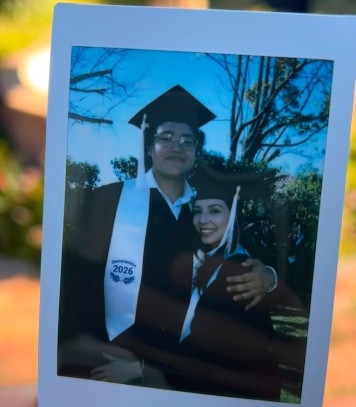
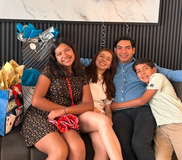
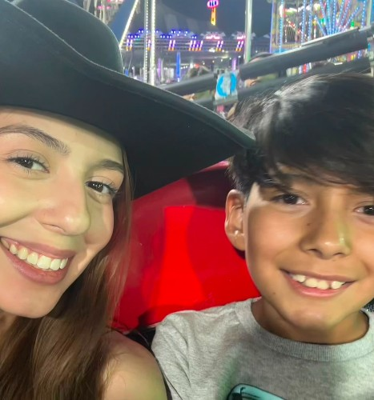
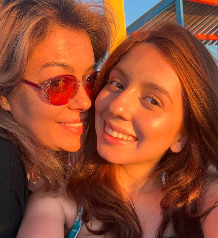
Today, I am a person who values responsibility, honesty, justice, and loyalty.
The qualities that define me are perseverance, intelligence, maturity, and compassion. I am someone who enjoys helping others and who continuously seeks personal and professional growth.
My greatest strengths are my ability to make thoughtful decisions, my determination to overcome adversity, and my willingness to work hard for the goals that matter most.
The people who inspire me most are my family members, whose love and support have guided me throughout my life.
My future goals are centered on education, service, and personal growth.
I am going to complete my university studies and obtain my medical degree. Furthermore, I will continue developing the skills and knowledge necessary to become an excellent physician.
I will specialize in a field that allows me to help people and improve their quality of life.
In the future, I will be working to heal patients, support families, and contribute positively to society through medicine.
Beyond my professional aspirations, I will continue strengthening my faith, nurturing meaningful relationships, and becoming a more independent and capable person.
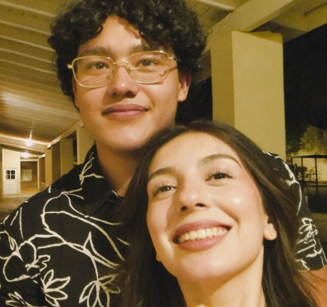
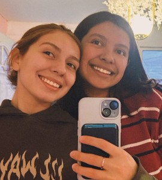
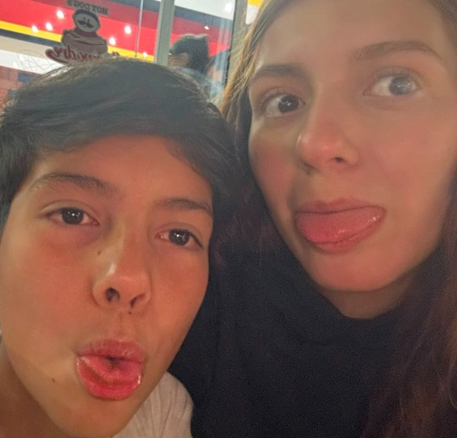
Looking back on my journey, I realize that every experience has contributed to the person I have become. I could have allowed challenges to discourage me, yet they ultimately strengthened my character.
I might have failed at certain moments, but each setback taught me valuable lessons that prepared me for future success.
I should have trusted myself earlier; however, every mistake became an opportunity for growth and self-discovery.
Consequently, I now understand that success is not defined solely by achievements but also by resilience, integrity, and the ability to continue moving forward despite adversity.
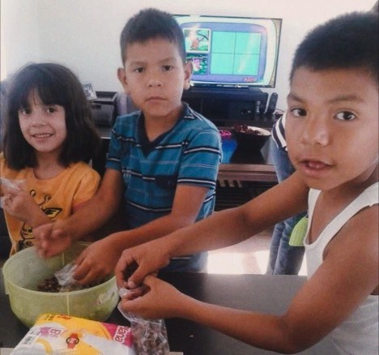
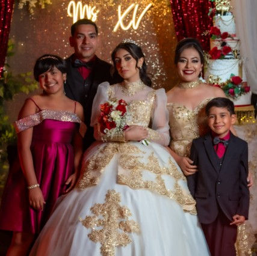
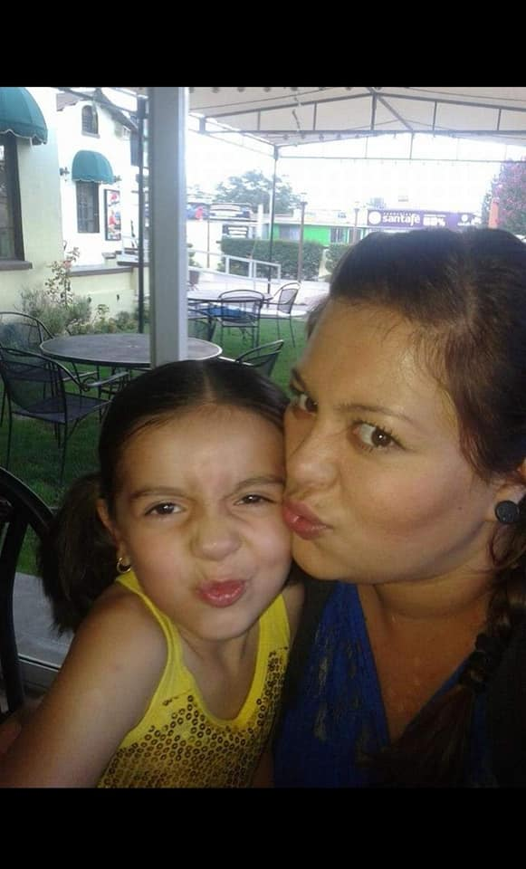
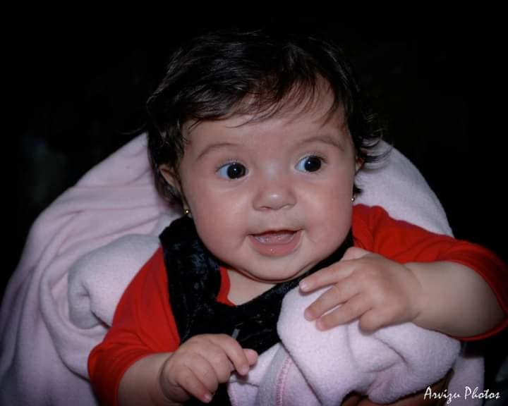
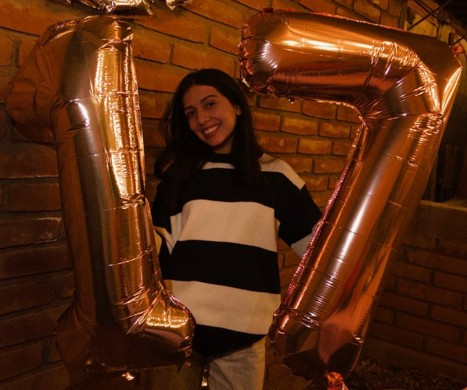
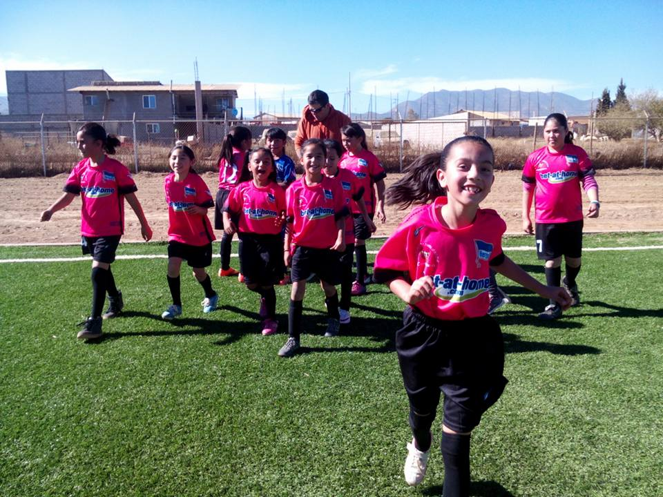
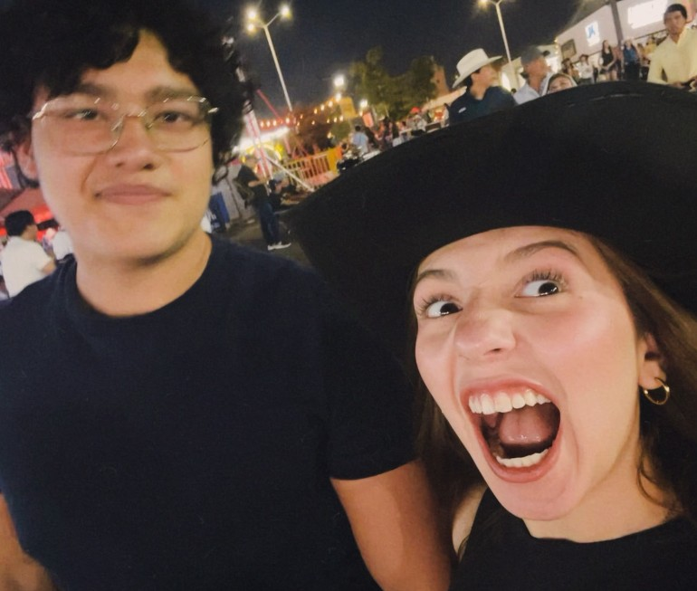
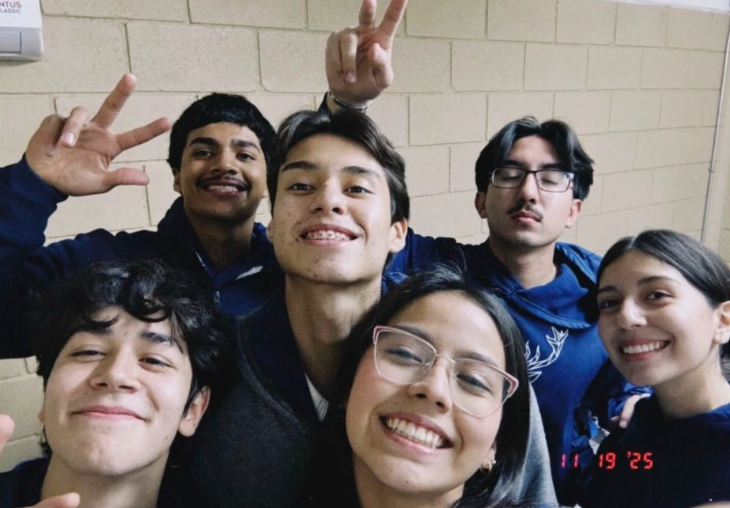
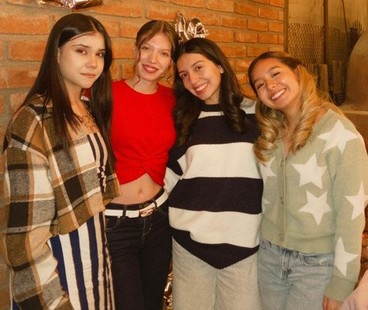